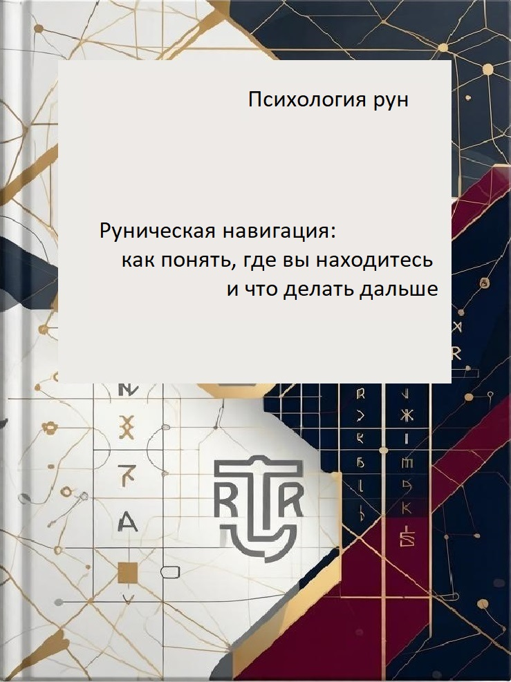

Психология рун
Руническая навигация: как понять, где вы находитесь, и что делать дальше
📖 Год: 2026 (готовится)
📚 Серия: Руны как этапы процесса — книга 2
🎯 Суть: Как определить своё состояние без гадания. 24 состояния — от «искры» до «просветления».
О книге
Эта книга — самостоятельная. Вы можете читать её, даже если не знакомы с первой частью «Инженерной модели реальности».
Задача этой книги — научить вас:
- распознавать, на каком этапе вы находитесь прямо сейчас
- понимать, почему вы застряли
- знать, что делать дальше
Руны здесь — не для гадания. Руны здесь — навигационная сетка.
Что вы найдёте в этой книге
- ✅ Инструмент диагностики своего состояния
- ✅ Ясные вопросы к себе
- ✅ Понимание своего текущего этапа
- ✅ Логику и наблюдение вместо магии
Три вопроса навигации
🔍 Где я сейчас? (Новая мысль? Хаос вариантов? Рутина? Дискомфорт? Озарение?)
🔍 Почему я здесь застрял? (Боюсь выбрать? Слишком много информации? Терплю?)
🔍 Что мне делать дальше? (Сузить? Выбрать? Сделать первый шаг? Остановиться?)
24 состояния навигации
Группа 1. Зарождение и выбор (руны 1–4)
- ᚠ Феху — Искра. Появление новой мысли
- ᚢ Уруз — Хаос. Много вариантов, голова кругом
- ᚦ Турисаз — Выбор сделан
- ᚨ Ансуз — Подтверждение. Зелёный свет
Группа 2. Движение и раскрытие (руны 5–8)
- ᚱ Райдо — Первый шаг. Самый трудный
- ᚲ Кеназ — Проявление. Результат становится видимым
- ᚷ Гебо — Баланс. Новое уживается со старым
- ᚹ Вуньо — Радость завершения. Выдох
Группа 3. Зрелость и трансформация (руны 9–12)
- ᚺ Хагалаз — Жизнь с результатом. Рутина
- ᚾ Наутиз — Нужда. Что-то не так
- ᛁ Иса — Остановка. Лёд. Концентрация
- ᛃ Йера — Озарение. Мгновенное решение
Группа 4. Перерождение и опыт (руны 13–16)
- ᛈ Перт — Второй шанс. Перезапуск на старом месте
- ᛇ Эйваз — Действие на основе опыта
- ᛉ Альгиз — Укрепление. Защита нового
- ᛋ Соулу — Опыт. Идеальная победа над собой
Группа 5. Завершающие этапы (руны 17–20)
- ᛏ Тейваз — Воля. Собрать всё в кулак
- ᛒ Беркана — Возрождение. Новая форма и статус
- ᛖ Эваз — Движение. Обмен и партнёрство
- ᛗ Маназ — Интеграция. Стать собой новым
Группа 6. Итог и связь поколений (руны 21–24)
- ᛚ Лагуз — Поток. Довериться себе
- ᛜ Ингуз — Семя. Потенциал внутри формы
- ᛟ Отал — Наследство. То, что остаётся после вас
- ᛞ Дагаз — Просветление. Завершение цикла
Шпаргалка на один лист
🔹 Пришла новая мысль → Феху — запишите и ждите 24 часа
🔹 Голова кругом от вариантов → Уруз — сужайте круг, ставьте дедлайн
🔹 Выбор сделан → Турисаз — подтвердите себе и миру
🔹 Сделал первый шаг → Райдо — делайте второй и третий
🔹 Результат видим → Кеназ — признайте: «Это есть»
🔹 Рутина, жизнь с результатом → Хагалаз — примите как норму
🔹 Дискомфорт, что-то не так → Наутиз — признайте сигнал
🔹 Остановился, думаю → Иса — назначьте дедлайн на выход
🔹 Озарение пришло → Йера — запишите и действуйте
🔹 Второй шанс на старом месте → Перт — меняйте подход, не уходя
🔹 Цикл завершён → Дагаз — завершите, отдохните
Матрица тупиков
🔴 Бесконечный сбор вариантов (застрял в Уруз)
🧭 Выход: введите ограничение, установите дедлайн, выберите «достаточно хороший».
🔴 Терплю, терплю, терплю (застрял в Хагалаз/Наутиз)
🧭 Выход: признайте дискомфорт. Перестаньте терпеть. Переходите в Иса.
🔴 Застыл. Не могу двинуться (застрял в Иса)
🧭 Выход: установите дедлайн. Сделайте одно микродействие.
🔴 Бросаю всё и начинаю с нуля
🧭 Выход: запретите себе бросать, пока не пройдёте Хагалаз.
«Эта книга — не о гадании. Она о том, как без рун, без карт, без вытягивания плашек — определить, на каком этапе процесса вы находитесь. И понять, что делать дальше.»